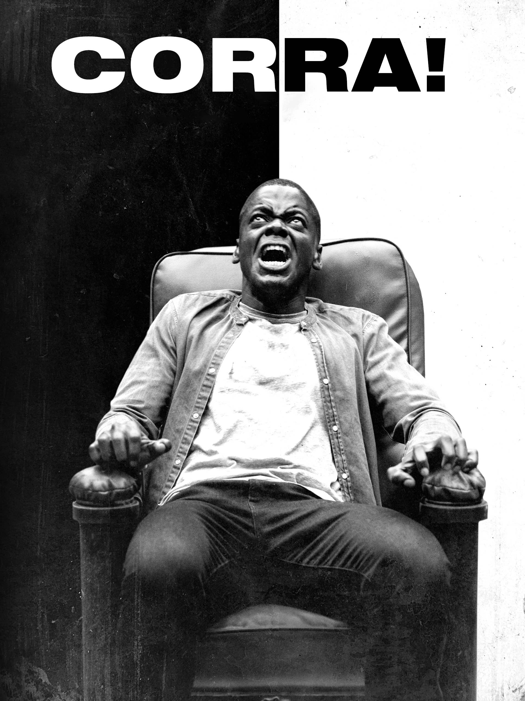

Bem-vindo ao AboutThem, um espaço dedicado à conscientização e combate ao racismo. Acreditamos no poder das histórias para promover a compreensão, empatia e mudança social. Nosso objetivo é proporcionar uma plataforma onde as vozes daqueles que enfrentaram o racismo possam ser ouvidas, e onde a educação e o diálogo sejam catalisadores para uma sociedade mais inclusiva.
O que é Racismo?
"O racismo é uma forma de preconceito e discriminação baseada num termo controverso, que sociologicamente é revisto e do qual a genética também inicia uma revisão: a raça. No século XIX, compreendia-se que a cor da pele e a origem geográfica de indivíduos promoviam uma diferenciação de raças. Misturando-se cultura e aspectos físicos, os primeiros antropólogos estabeleceram uma hierarquia das raças, o que, por vezes, reforçava a dominação de povos brancos europeus sobre populações de outras etnias não europeias. O racismo é um mal que afeta a vida de muitas pessoas e, como uma relação de entendimento ultrapassada e errada, deve ser superado."
Racismo X Preconceito
"Existem diferenças conceituais entre os termos racismo e preconceito. O preconceito, na raiz da palavra, é a formulação de um conceito sobre algo sem antes o conhecer. O preconceito, por exemplo, pode ser julgar que um alimento é ruim por seu aspecto físico. Trazendo para as relações sociais, o preconceito consiste no prejulgamento de algo sem, de fato, conhecê-lo."
Resumindo o preconceito é uma atitude geral de julgamento negativo baseada em características percebidas, enquanto o racismo é uma forma específica de preconceito relacionada à raça. O racismo é uma manifestação mais específica e estruturada de preconceito, muitas vezes com implicações mais amplas e sistêmicas. Ambos são fenômenos sociais prejudiciais que devem ser compreendidos e abordados para promover sociedades mais justas e inclusivas.
Recomendações

Corra
Um jovem homem negro parece estar perdido nas ruas desertas da vizinhança de um subúrbio. Enquanto ele caminha pela calçada, um carro branco aparece e começa a seguir o jovem.
Dois estranhos
Em Dois Estranhos, Carter James está tentando voltar para casa para encontrar seu cachorro depois de um bem-sucedido primeiro encontro, porém acaba sendo vítima de um policial racista e é baleado.
Filhos de Ninguem
Enitan é um jovem nigeriano que quando criança foi mandado para ser criado por uma família de ingleses brancos. Desesperado por aprovação social, ele descende em uma jornada de auto-ódio.
Entre em Contato
Estamos aqui para responder a todas as suas perguntas e fornecer o suporte necessário. Você pode entrar em contato conosco pelos seguintes meios: